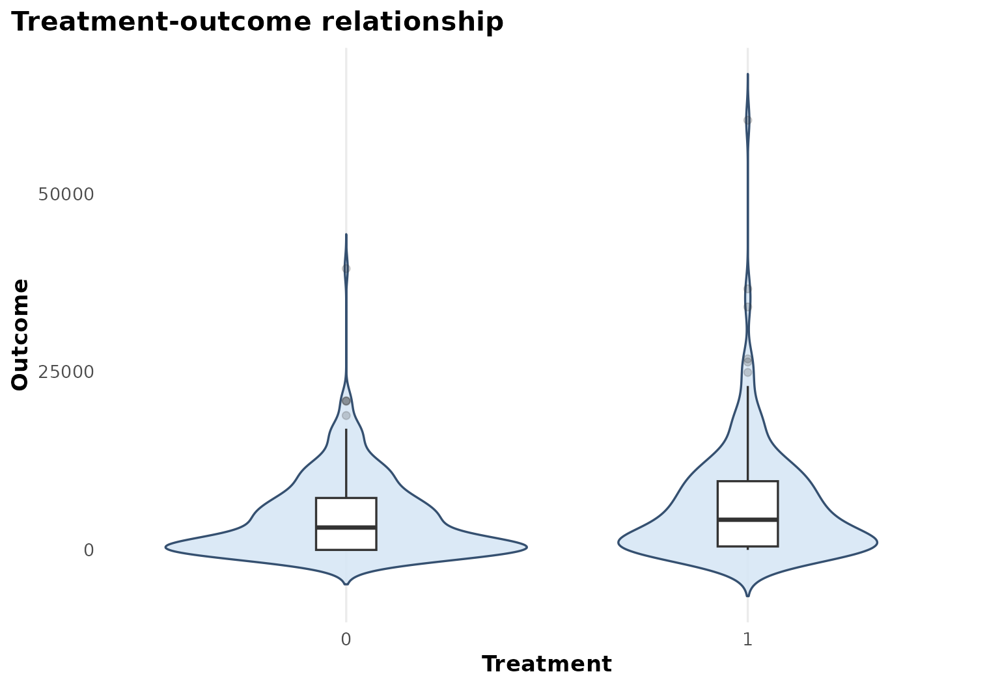
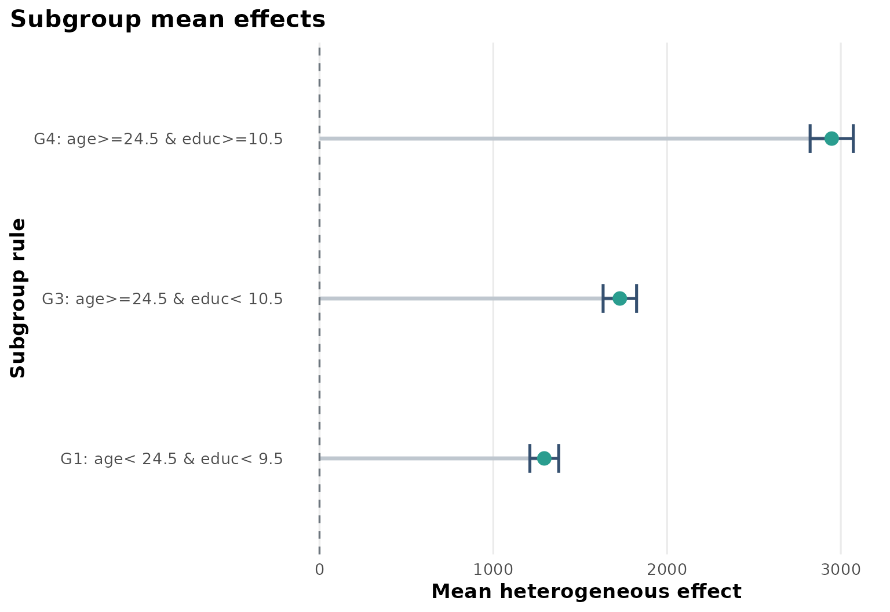
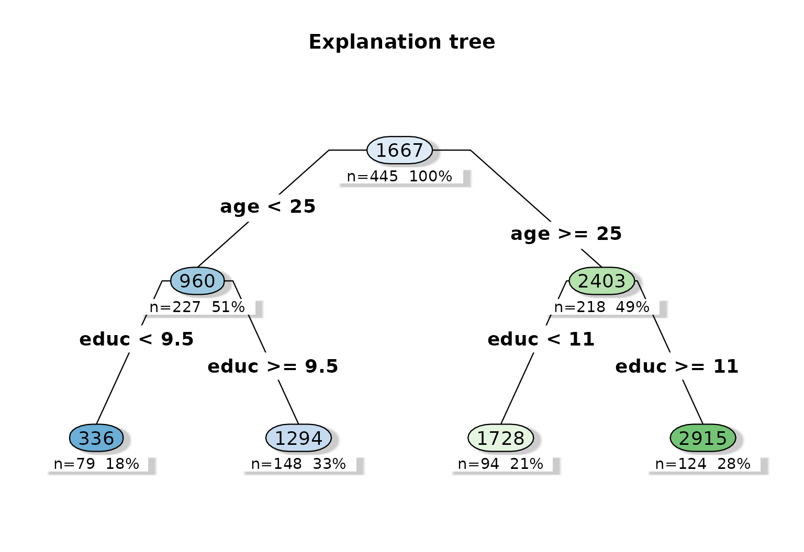
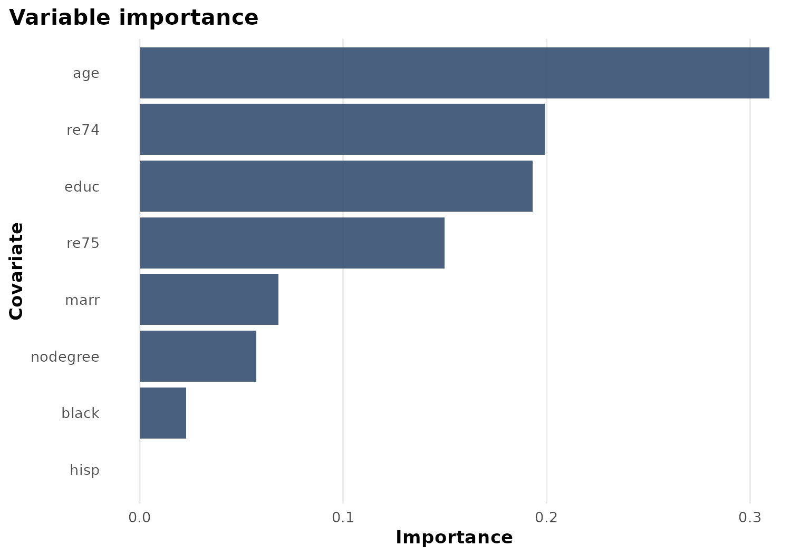

Case Study: NSW job training
case-study-nsw.RmdBackground
causaldata::nsw_mixtape is a standard program-evaluation
dataset built around the National Supported Work training program. It is
widely used in causal inference tutorials because treatment is binary,
outcomes are economically meaningful, and baseline heterogeneity is
plausible.
Objective
The question here is whether the earnings benefit of job training differs by pre-treatment labor-market history and demographic background.
The estimand is again:
where is post-program earnings and is program participation.
Analysis setup
dat <- prepare_case_nsw()
fit <- fit_observational_forest(
data = dat,
outcome = "outcome",
treatment = "treatment",
covariates = setdiff(names(dat), c("sample_id", "outcome", "treatment")),
sample_id = "sample_id",
seed = 123,
num_trees = 400,
tree_minbucket = 50
)
fit$check_table
#> check_name value status
#> 1 rows_used 445.0000000 info
#> 2 rows_dropped_missing 0.0000000 ok
#> 3 outcome_sd 6631.4916806 ok
#> 4 treatment_sd 0.4934022 ok
#> 5 treatment_rate 0.4157303 info
#> 6 covariate_count 12.0000000 info
fit$subgroup_table
#> subgroup rule n effect_mean effect_low effect_high
#> 1 G1 age< 24.5 & educ< 9.5 148 1293.561 1210.623 1376.498
#> 2 G3 age>=24.5 & educ< 10.5 94 1728.480 1632.111 1824.848
#> 3 G4 age>=24.5 & educ>=10.5 124 2947.757 2823.516 3071.998Design view

In this tutorial, the DAG emphasizes baseline confounding by age, education, marital status, and lagged earnings history.
Treatment and outcome pattern

The raw treatment-outcome view gives the scale of the earnings outcome and helps contextualize the subgroup-specific effect estimates.
Heterogeneous effect summary

The subgroup summary shows a clear gradient: older and more educated strata in this analysis tend to have larger predicted earnings gains than the youngest, least educated stratum.
Explanation tree
plot_effect_tree(fit)
The explanation tree provides a readable program-evaluation story. Age and education dominate the first splits, which aligns with an economic hypothesis that labor-market readiness modifies the returns to training.
Variable importance

Lagged earnings also appear among the leading variables, which is consistent with the idea that pre-program attachment to the labor market helps organize treatment heterogeneity.